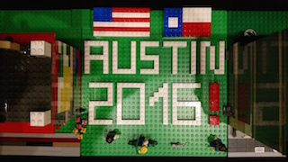

OpenStack Summit Austin April 2016
Monday April 25, 2016
Operations Guide Fishbowl
https://etherpad.openstack.org/p/AUS-ops-Docs-ops-guide
HP is going task based information that is accessed through search. EPPO.
Dead tree is dead. Huzzah! This simplifies publishing in RST.
Can tasks in the guide be date/version stamped so that operators know what is relevant to their deployment
maybe combine Arch and Ops Guide into one after removing lots of old ops content
Mitaka: Beyond the Release Notes
https://etherpad.openstack.org/p/AUS-ops-Beyond-the-Release-Notes
Meet the OpenStack Personae (So Far)
https://etherpad.openstack.org/p/mitaka-openstackux-personasession
Workshop @Rackspace Austin
Attributes
cloud roles
Workshop @IBM Design Austin
cloud adoption stages
OpenStack ecosystem
cloud roles
integrate personae into your discussions
participate in activities to document, validate, and update personae
these different roles tend to emerge as a company gets bigger. Scale of an organization impacts the diversity of roles.
Big Tent: One Year Later
Monty Taylor and Thierry Carrez
The Good
we are no longer stuck when trying to get projects from nascent to a part of OpenStack. Requirements for inclusion were too high before Big Tent.
more collaboration. Disparate projects with the same goal are merging and working together more often.
more reactivity. People/teams are more able to react to needs and requirements of operators and users.
more competition. Now that anyone can be part of the Big Tent, new ideas can get a foothold and demonstrate they are better.
forced us to document the OpenStack way
adding more projects helped the TC to focus on selected projects
The Bad
single-vendor. TC no longer requires projects to involve multiple vendors
confusion. The plethora of projects can be confusing for people new to the OpenStack ecosystem.
made joining OpenStack harder for established projects because they have established processes that do not match the Big Tent requirements
where do you set the limits of the tent?
cleaning up the tent is difficult and will take time. Some projects that were accepted into the tent need to be removed when they are no longer maintained.
Next challenges
improving the end-user experience with the Big Tent
rethinking the Design Summit to include Bit Tent
From Upstream Documentation To Downstream Product Knowledge Base
Stefano Maffulli and Caleb Boylan (DreamHost)
How to instruct customers with constraints (small team)
have to be smart: re-use, automate, collaborate
Ideal scenario
pull from upstream
build docs locally
publish HTML to help desk
go contribute straight upstream
receive patches
Publishing
tox -> Sphinx -> Zendesk REST API
YAML file that nests files-to-publish inside the route for where they should be published
automated using a Jenkins job that polls GitHub repository and runs script when changes detected
section titles that work well in context (e.g. Launch Instances), do not work well as isolated tasks and must be changed (e.g. How to Launch Instances)
Improve titles by making them more specific to help people know what a topic is about and to improve SEO.
Tuesday April 26, 2016
A Problem: Single Sourcing with Sphinx
Svetlana Karslioglu (Mirantis)
DITA lends itself better to content reuse, but RST/Sphinx has extensibility that can be used to build single-source solutions
Mirantis has 3 docs repositories for different products, and have a separate repository holding the glossary for all of them
Options
- git sub-module
these are difficult to set up and to get everyone using them correctly
- automated gerrit reviews
continuous integration jobs to push glossary to repositories, but manual merges still required
- Sphinx extension
Submit changes to glossary. When a release is ready, package and submit to PyPi. Then include the package in each doc repository by specifying it as a requirement in requirements.txt and adding it to conf.py in the sphinx project. A Sphinx extension is required to build the glossary and use it as a directive so you can add it to the docs' index.rst.
OpenStack Talent Development - Lessons Learned
Tony Campbell (Rackspace) and Michael Apostol (OSIC)
use NPS to determine how people found the course
give exam at start and at finish of training to determine technical skills advancement
new recruits were arranged into small teams and assigned coaches for mentoring outside the formal training
training graduates were assigned to work on targeted OpenStack projects
Challenges
finding OpenStack talent and drawing them to San Antonio
teaching new contributors how to be effective in the community (this is very project specific)
identifying the best bugs for new contributors
Lessons learned
- Cast a global net
OpenStack is a global community, so find talent by looking world-wide. Bringing the teams together geographically in San Antonio was very useful for building teams.
- Farm universities for talent
Partner with universities to develop talent. Collaborate on cloud curriculum with an emphasis on OpenStack. Offer paid internships and job opportunities.
- Solar System model
Leverage OpenStack experts (PTLs, Cores) and surround them with new developers so they can learn the ecosystem and become influencers
- Develop a learning culture
Learn to embrace rookies and training as a strategic leverage point. Schedule regular rhythm of training and development, offering a funnel to deeper training. Continually assess training effectiveness.
- The Way of the Stacker
OpenStack community has a culture of its own. To be a success you must embrace and work within that culture. Many new developers also need some introduction to open source development generally.
What's Next
talent replication, where former graduates help teach new cohorts
new "learn/do" model
project deep dives
classes on supporting tech (Linux, Python, etc.)
Cross Project workshops: Brainstorm format for design summit split event
http://ttx.re/splitting-out-design-summit.html http://lists.openstack.org/pipermail/openstack-dev/2016-February/087161.html
Most people are agreed that a change would be beneficial, but there are many factors to consider:
planning phases
release candidates
PTL elections
cost
location
mid-cycles vs summits
Wednesday April 27, 2016
Docs Mitaka Retrospective
Install Guide working session
https://etherpad.openstack.org/p/austin-docs-workgroup-install
Docs Toolchain/Infra working session
OpenStack Ansible documentation work session
https://etherpad.openstack.org/p/openstack-ansible-newton-role-docs
Thursday April 28, 2016
Contributor Guide work session
https://etherpad.openstack.org/p/austin-docs-contributorguide
Work items
improve doc-tools documentation and clean up. This should be in the doc-tools repository. Links to this content from the Contributor Guide. Add personae to this section in the Contributor Guide so people know what info is relevant to them.
Add openstackdocstheme overview to Contributor Guide with links to detailed content in the theme repository.
Add some reno documentation/guidelines. Olga to create a spec. See http://docs.openstack.org/project-team-guide/release-management.html#how-to-add-new-release-notes
standards for diagrams. Image library?
Add content on how to publish/maintain the Install Guides
Add documentation review policies
Security Guide work session
https://etherpad.openstack.org/p/austin-docs-workgroup-security
bugs can suffer from going a bit stale as there is not a large group of people who work on the Security Docs regularly. Possibly an issue related to people lacking the required domain knowledge.
Networking Guide work session
https://etherpad.openstack.org/p/austin-docs-workgroup-networking
Documentation Newton planning
Friday April 29, 2016
Documentation Contributors Meetup
Much work was discussed. Some was even accomplished.
To-Do
Improve titles by making them more specific to help people know what a topic is about and to improve SEO.